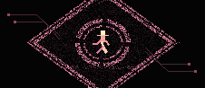
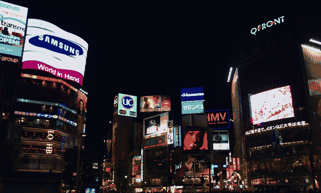

Kenapa pulau perlu arsip?
Setiap episode meninggalkan sesuatu. Kalau lampu jalan sudah terpasang, adegan berikutnya harus dimulai dari pulau yang punya lampu itu.

Halo, aku Dewo Adjie Fadhillah, atau VLUU di internet. Aku tinggal di Malang.
Aku bikin aplikasi web, desain di Figma, dan sesekali ngerjain hardware. Pulau Gobi jadi tempatku nyoba cerita dan animasi 3D.
Setiap episode meninggalkan sesuatu. Kalau lampu jalan sudah terpasang, adegan berikutnya harus dimulai dari pulau yang punya lampu itu.
